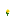

The Moobloom is a flower-covered cow added by Earthify.
Similar to a Mooshroom, Mooblooms grow Buttercups on their backs and provide unique interactions involving flowers and Suspicious Stew.
Behavior
- Passive mob.
- Can breed with other Mooblooms.
- Can be sheared.
- Produces Buttercups.
- Can create Suspicious Stew.
Buttercups
Using Bone Meal on an adult Moobloom produces a Buttercup.
Mooblooms are permanently covered in Buttercups and can generate additional flowers through player interaction.
Suspicious Stew
Using a Bowl on an adult Moobloom creates Suspicious Stew.
The stew inherits the effects associated with Buttercups.
Shearing
Adult Mooblooms can be sheared.
- Transforms into a normal Cow.
- Drops 4 Buttercups.
- Creates an explosion particle effect.
Drops
 Leather
Leather
|
0–2 |
 Raw Beef
Raw Beef
|
1–3 |
 Cooked Beef
Cooked Beef
|
1–3 (if killed while on fire) |
|
 Buttercup |
4 (when sheared) |